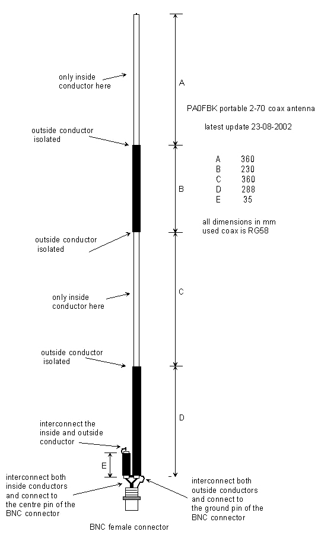

Портативная антенна из коаксиального кабеля для 2 м и 70 см диапазонов от PA0FBK.

На сайте нидерландского радиолюбителя Франка Бремера PA0FBK
представлено описание разработанной им антенны для 2 м и
70 см диапазонов, полностью выполненной из
коаксиального кабеля RG58.
Антенна представляет собой запитываемый с конца 1/2 волновый диполь для
диапазона 2 м и 3/2 волновый диполь для диапазона 70 см.
Она выполнена из одного отрезка
коаксиального кабеля RG58. В частях «A» и
«C» (каждая длиной 360 мм) были удалены внешняя
оболочка и экран, в частях «B» (230 мм) и
«D» (288 мм) - все оставлено. В верхнем конце части
«E» (35 мм) внутренний проводник и экран соединены.
Части «D» и «E» внизу
соединяются с разъемом BNC или другим, подходящим для вашей
радиостанции.
Эта антенна работает следующим образом: части «A»,
«B» и «C» вместе являются
полуволновым излучателем на 2 м. Часть «B»
резонируют на 70 см и ведет себя, как коаксиальная связь между
«A» и «C», которые являются
половинами волнового излучателя на 70 см.
Для оптимальной адаптации к
50 омам есть трансформатор - части «D» и
«E». Длины «D» и
«E» важны, изменяя их, можете улучшить SWR, в
случае необходимости.
Эта антенна столь же хороша, как и "J" антенна и имеет то преимущество,
что работает и на 2 м и на 70 см.
Я выбрал эту антенну потому, что её легко сложить в сумку и
использовать при работе в командировках.
В гостинице, закрепив эту антенну на карнизе в комнате на втором этаже,
я проводил постоянные
сеансы радиосвязи портативной радиостанцией на расстояние 75 км (из
квадрата KO53UA с KO53UQ). У моего корреспондента использовалась
антенна GP на крыше пятиэтажного дома.
Длину отрезка E (короткозамкнутого) нужно взять на несколько
сантиметров больше и закорачивая оплётку с центральной жилой
иголкой, настроить антенну на минимальный КСВ.
От антенны до радиостанции я использовал кусок коаксиального кабеля
RG58,
около метра длиной, с четвертьволновым
отсекающим стаканом для 435 МГц,
выполненным из оплётки коаксиального кабеля. Место соединения оплёток я
не паял, а выполнил бандаж из "кроссировки", предварительно сняв
изоляцию и обмотал всё изолентой.
Мне втречалось описание этой антенны, где на кабеле снижение на
расстоянии 195 мм от разъёма для подключения антенны изготавливался
ВЧ-дроссель из 6-ти витков кабеля на каркасе диаметром 20 мм.
Файл модели антенны в программе MMANA
Владимир, EW7AS.
Главная | О своём городе | Антенны | Радиосвязь на КВ | Радиосвязь на УКВ | Гостевая
Copyright © 2014 Сайт радиолюбителей г. Климовичи | Design studio «Zurbagan»